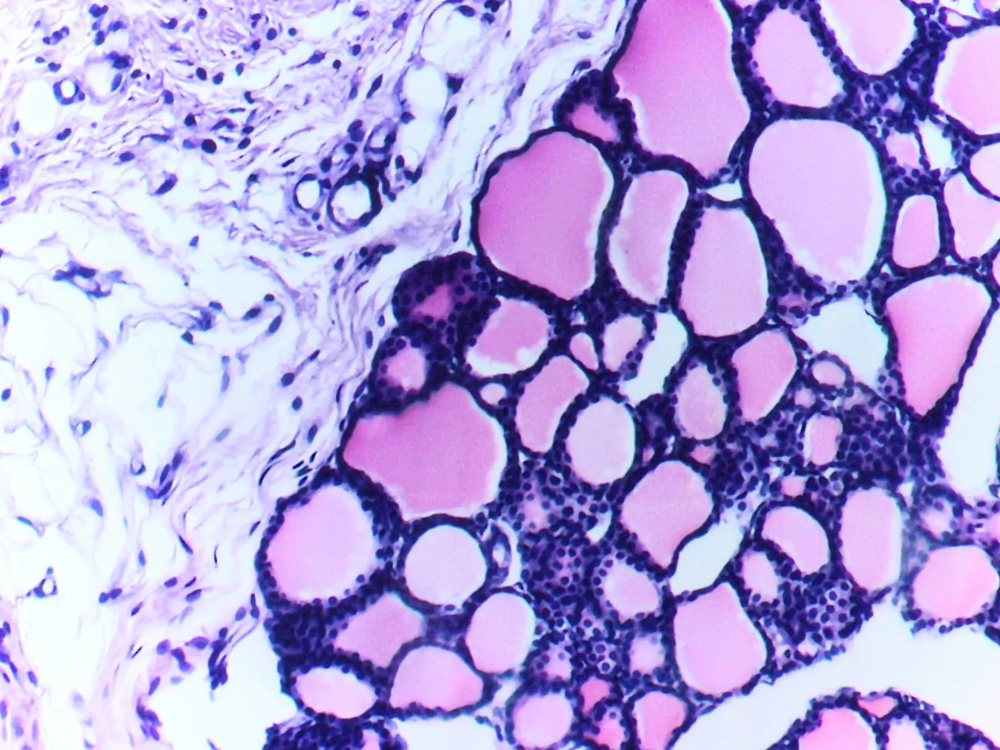
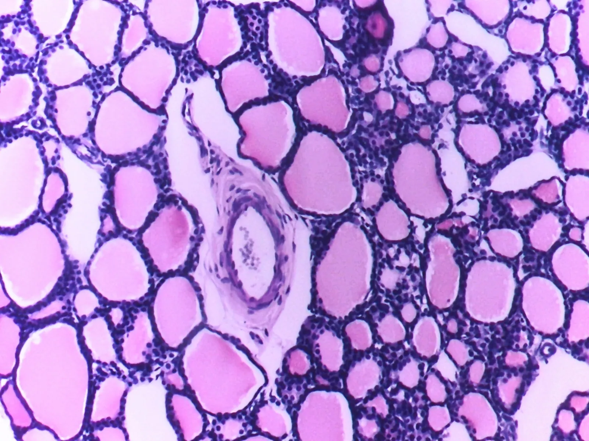

Lâmina 36 · Sistema endócrino
Glândula tireoide


Toque na imagem para ampliar. No computador, use as setas do teclado para trocar de imagem.
Lâmina 36 · Sistema endócrino


Toque na imagem para ampliar. No computador, use as setas do teclado para trocar de imagem.